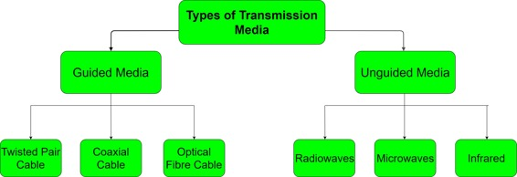

In data communication terminology, a transmission medium is a physical path between the transmitter and the receiver i.e it is the channel through which data is sent from one place to another. Transmission Media is broadly classified into the following types:

1. Guided Media:
It is also referred to as Wired or Bounded transmission media. Signals being transmitted are directed and confined in a narrow pathway by using physical links.
Features:
- High Speed
- Secure
- Used for comparatively shorter distances
There are 3 major types of Guided Media:
(i) Twisted Pair Cable –
It consists of 2 separately insulated conductor wires wound about each other. Generally, several such pairs are bundled together in a protective sheath. They are the most widely used Transmission Media. Twisted Pair is of two types:
- Unshielded Twisted Pair (UTP):
This type of cable has the ability to block interference and does not depend on a physical shield for this purpose. It is used for telephonic applications.Advantages:
- Least expensive
- Easy to install
- High speed capacity
Disadvantages:
- Susceptible to external interference
- Lower capacity and performance in comparison to STP
- Short distance transmission due to attenuation
- Shielded Twisted Pair (STP):
This type of cable consists of a special jacket to block external interference. It is used in fast-data-rate Ethernet and in voice and data channels of telephone lines.Advantages:
- Better performance at a higher data rate in comparison to UTP
- Eliminates crosstalk
- Comparitively faster
Disadvantages:
- Comparitively difficult to install and manufacture
- More expensive
- Bulky
(ii) Coaxial Cable –
It has an outer plastic covering containing 2 parallel conductors each having a separate insulated protection cover. Coaxial cable transmits information in two modes: Baseband mode(dedicated cable bandwidth) and Broadband mode(cable bandwidth is split into separate ranges). Cable TVs and analog television networks widely use Coaxial cables.
Advantages:
- High Bandwidth
- Better noise Immunity
- Easy to install and expand
- Inexpensive
Disadvantages:
- Single cable failure can disrupt the entire network
(iii) Optical Fibre Cable –
It uses the concept of reflection of light through a core made up of glass or plastic. The core is surrounded by a less dense glass or plastic covering called the cladding. It is used for transmission of large volumes of data.
Advantages:
- Increased capacity and bandwidth
- Light weight
- Less signal attenuation
Disadvantages:
- Difficult to install and maintain
- High cost
- Fragile
2. Unguided Media:
It is also referred to as Wireless or Unbounded transmission media.No physical medium is required for the transmission of electromagnetic signals.
Features:
- Signal is broadcasted through air
- Less Secure
- Used for larger distances
There are 3 major types of Unguided Media:
(i) Radiowaves –
These are easy to generate and can penetrate through buildings.The sending and receiving antennas need not be aligned. Frequency Range:3KHz – 1GHz. AM and FM radios and cordless phones use Radiowaves for transmission.
Further Categorized as: (i) Terrestrial and (ii) Satellite.
(ii) Microwaves –
It is a line of sight transmission i.e. the sending and receiving antennas need to be properly aligned with each other. The distance covered by the signal is directly proportional to the height of the antenna. Frequency Range:1GHz – 300GHz. These are majorly used for mobile phone communication and television distribution.
(iii) Infrared –
Infrared waves are used for very short distance communication. They cannot penetrate through obstacles. This prevents interference between systems. Frequency Range:300GHz – 400THz. It is used in TV remotes, wireless mouse, keyboard, printer, etc.